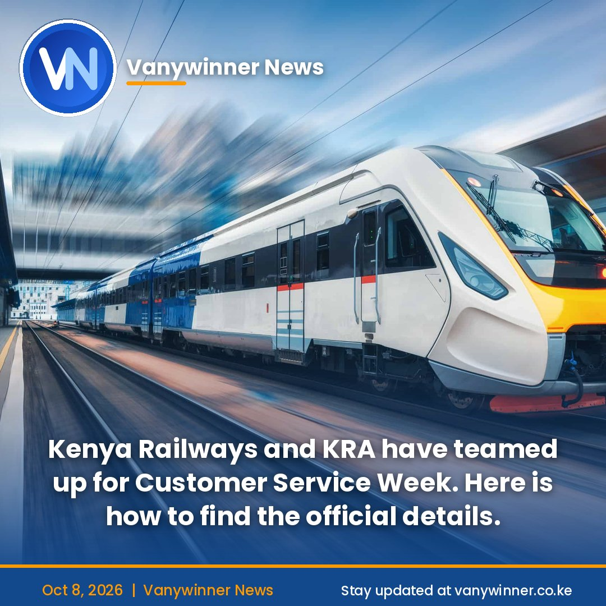

Free Commuter Train Tickets: Where to Get Them, and How to Avoid Scams
News
By Newsroom | 8 October 2026
NAIROBI. Kenya Railways has announced free commuter train tickets for members of the public, as part of this year's Customer Service Week celebrations. The corporation said it partnered with the Kenya Revenue Authority (KRA) on the offer, which it announced on Tuesday, 6 October.
What we know so far
Kenya Railways has not said which routes, dates or how many tickets will be given out, or what conditions apply. Customer Service Week is reported to run from 5 to 9 October 2026, which would mean the offer is short-lived. Kenya Railways has not confirmed the dates, so commuters should check before planning a trip around it.
The corporation has asked interested Kenyans to follow its official social media pages for details on routes, dates and how to get the tickets.
Where to look for the details
Kenya Railways: its verified social media accounts and its website, krc.co.ke KRA: its official X account, @KRACorporate, and its website, kra.go.ke
Beware of scams
Free tickets are exactly the kind of offer fraudsters use. Kenya Railways has repeatedly warned about fake websites and social media pages that pretend to represent it and take payments from passengers. It has said it does not run an official TikTok account, and it has urged the public to report suspicious pages.
Commuters should keep these points in mind:
Don't pay anyone for a "free" ticket. Don't share personal or payment details through links sent on WhatsApp or from unknown pages. Check any announcement against Kenya Railways' own verified channels before acting on it. Report suspicious pages or individuals to Kenya Railways' customer service.
Booking normal tickets
Outside promotions like this one, Kenya Railways says Madaraka Express tickets should be bought only through its official online booking portal, its USSD code *639#, or at its stations.
A wider push on the rails
The offer comes as Kenya Railways continues to modernise Nairobi's commuter network, including a rail link being developed to serve the Talanta Sports City Stadium ahead of the 2027 Africa Cup of Nations.
For now, the free tickets appear to be a short-term customer appreciation gesture rather than a permanent change to fares.